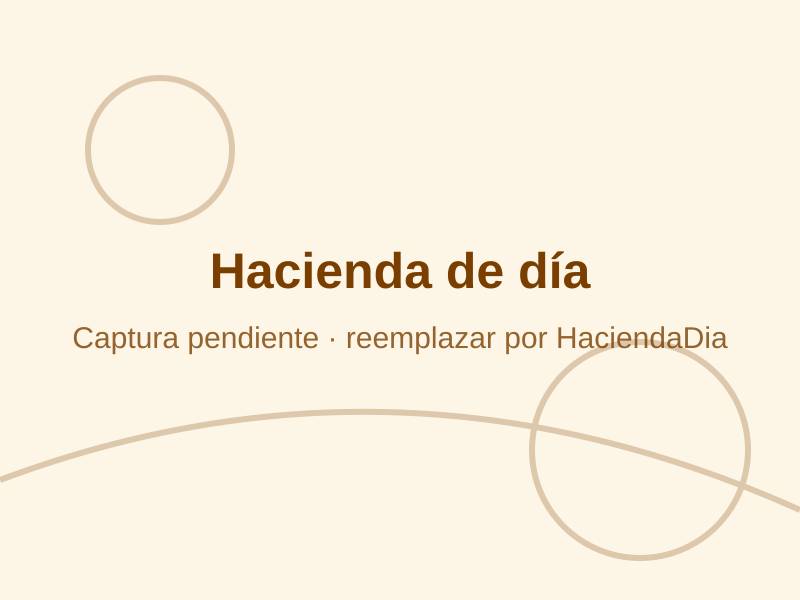
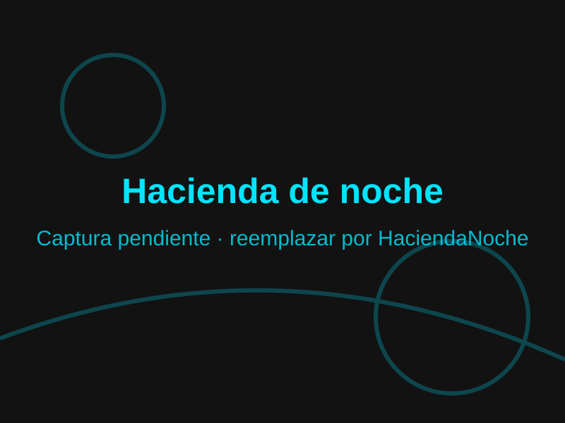
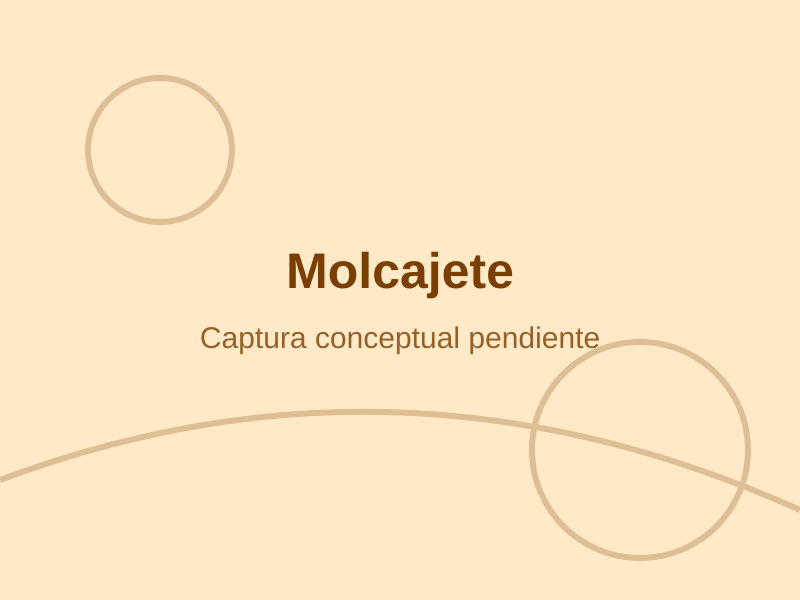

El experimento y «La Visión»
Como Pajianí, investigador y alquimista, sufres un accidente alquímico que despierta tu percepción: ahora ves la contaminación invisible que envenena el valle.
Cozy Farming · Bullet Heaven
Cuida una hacienda mística de día, cura animales sagrados con medicina de molcajete y, de noche, toma su forma de nahual para defender el santuario de Las Entidades. Un jugador, sin conexión.
«Planta esta semilla en la vida real y cultiva tu jardín en Yolcatl».


La historia del Pajianí, la hacienda y los Guardianes, entre el amanecer y el eclipse.
Como Pajianí, investigador y alquimista, sufres un accidente alquímico que despierta tu percepción: ahora ves la contaminación invisible que envenena el valle.
Un refugio virreinal rodeado por una jungla corrompida. Cada cierto número de días llega una invasión, y siempre se anuncia con 3 días de anticipación.
Espíritus antiguos como Chicome. Al entregarles Orbes Místicos restauran su poder y expanden el santuario.

Cultiva con calma de día y defiéndete con acción frenética de noche.
Cada animal que curas te presta su forma de nahual: avanzar es crear vínculos.
Herbolaria, alebrijes y lengua náhuatl, tratados con respeto y sin caricaturas.
Combate de apuntado automático, controles intuitivos y un modo pacifista, el Jardín Zen.
Tres fases circulares que se alimentan entre sí: amanecer tras eclipse.
Ara la tierra, siembra semillas sagradas, riega y cosecha Copal, Cempasúchil y Árnica para tus remedios.
Con «La Visión» encuentras animales heridos y los curas con medicina preparada en el molcajete. Cada animal sanado te presta su forma de nahual.
Oleadas de Entidades asedian el santuario: esquiva, ataca en automático y despliega las habilidades de tus nahuales.

Mecánica distintiva
No hay un botón de «fabricar»: la medicina se prepara con las manos.
Lleva las hierbas que cultivaste hasta el mortero, con ratón, mando o con el dedo.
Movimientos circulares o pulsaciones rítmicas para mezclar la medicina y curar a la fauna.
Si los gestos repetitivos no son para ti, puedes mantener presionado el botón en lugar de girar o hacer clics.
Cosméticos opcionales
Las tarjetas coleccionables de Yolcatl desbloquean disfraces para tu protagonista y sus animales mediante realidad aumentada.
Cada tarjeta coleccionable lleva el arte de un cosmético.
Abre la función AR del juego y enfoca la tarjeta con tu celular.
El cosmético aparece en tu espacio y queda guardado para usarlo en el juego.
Son solo estéticos: no cambian la dificultad ni tu progreso. El juego completo se disfruta sin tarjetas.

Cada animal rescatado te presta su oficio de día y su poder de noche.
Cambia entre Día y Noche con el botón flotante para revelar los poderes de defensa.
Hacienda
Rompe rocas y despeja terreno fácilmente.
Defensa · Modo Rodante
Embiste a gran velocidad, derribando y aturdiendo hordas.
Hacienda
Acelera el crecimiento de los cultivos al volar sobre ellos.
Defensa · Impulso Espiritual
Esquive veloz para escapar cuando te rodean las Entidades.
Hacienda
Cosecha las parcelas en una sola acción.
Defensa · Fingir Muerte
Invisible e inmune a las Entidades por unos segundos (una vez por noche).
Hacienda
Ara todas las parcelas en una acción.
Defensa · Embestida Salvaje
Carga frontal que dispersa y empuja a grupos de sombras.
Hacienda
Detecta rápidamente animales heridos en las zonas de exploración.
Defensa · Ladrido Sagrado
Onda expansiva que disuelve Entidades menores y revela premios y semillas.
Hacienda
Aumenta la probabilidad de obtener doble recolección al cosechar.
Defensa · Aura de intimidación
Las Entidades retroceden y avanzan en dirección contraria.
Un juego para una persona, hecho para correr bien en equipos modestos.
Optimizado para correr en gama baja
Funciona sin conexión a internet y sin launcher: descargas, abres y juegas.
Registro anticipado
Regístrate y recibe fichas botánicas y mitológicas, lore y fechas de pruebas.
Cargando registros…Meta: 5,000
Si llegamos a 5,000 registros, todas las personas registradas desbloquean un accesorio exclusivo para animales dentro del juego.
Prensa, colaboraciones o dudas: cuéntanos y te respondemos. Si eres creador de contenido, descarga también el Kit de Prensa.